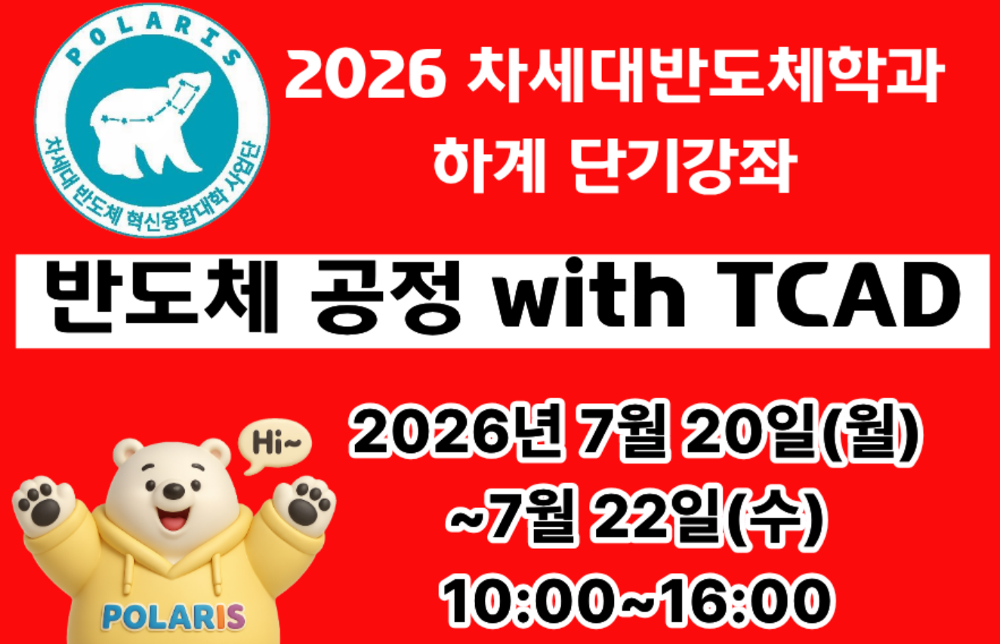
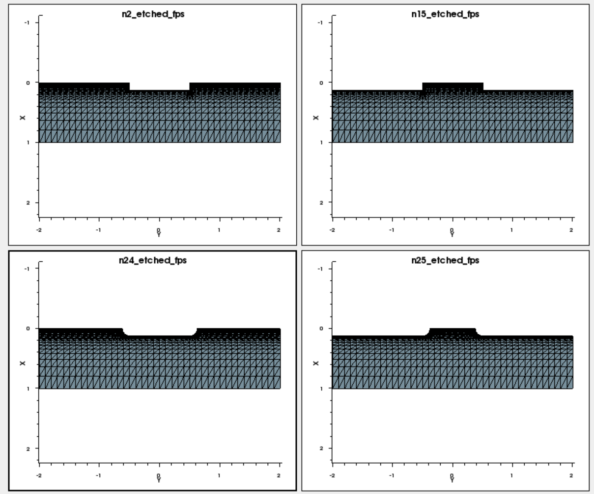
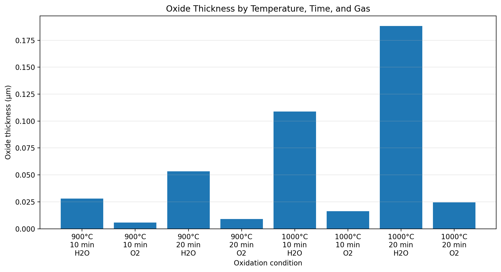
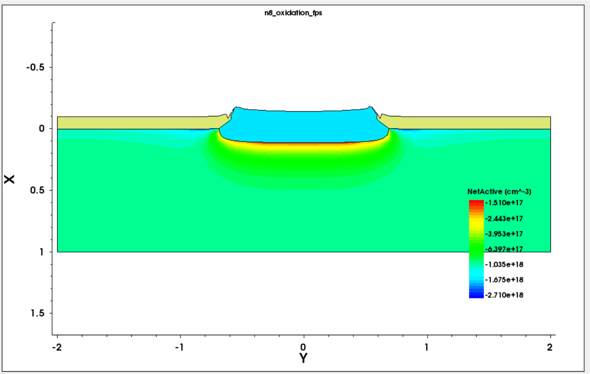
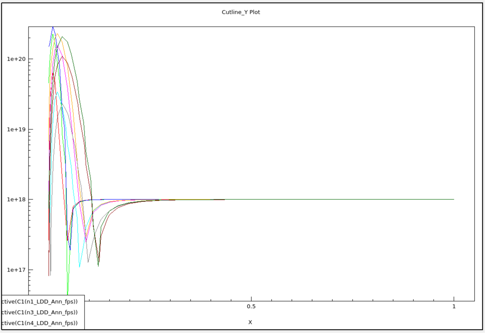
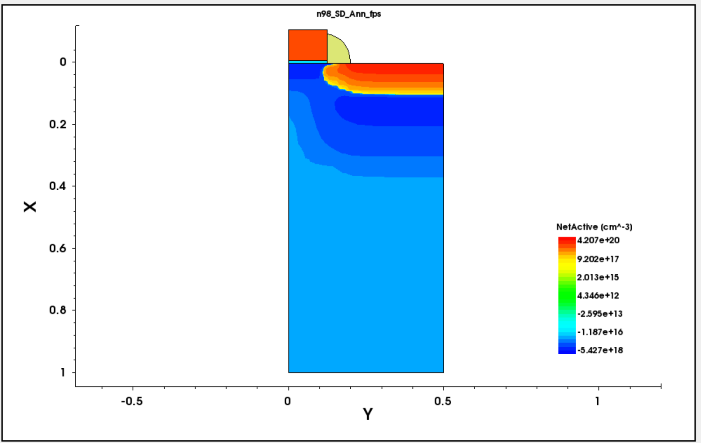
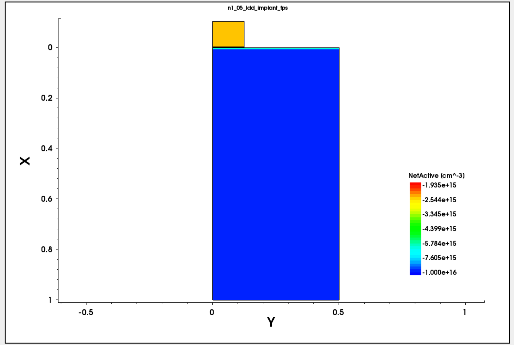
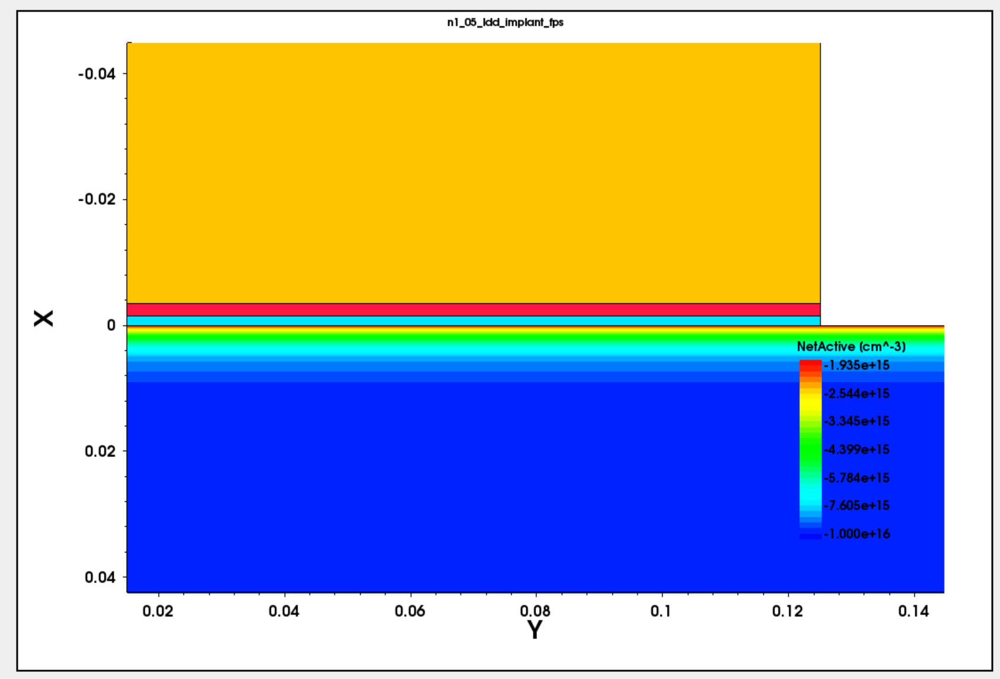

반도체 공정 with TCAD
From process commands to structure and profile interpretation
Sentaurus S-Process에서 공정 구조를 생성하고, Workbench Parameter Split으로 조건을 분할한 뒤, Sentaurus Visual에서 구조와 도핑 Profile을 비교한 3일간의 반도체 공정 시뮬레이션 단기강좌입니다.
01 / OVERVIEW
A three-day semiconductor process workflow.

- 웨이퍼 실물 제작이 아닌 S-Process 기반 공정 시뮬레이션 실습
- Command File 수정과 Workbench Parameter Split
- 공정 조건에 따른 구조와 도핑 분포 비교
- Sentaurus Visual 기반 결과 분석
- 총 3일, 15시간 이수
Scope: 본 페이지의 결과는 Sentaurus TCAD 공정 시뮬레이션 결과이며, 실제 웨이퍼 측정이나 전기적 소자 성능 검증 결과가 아닙니다.
02 / DAY 1
Structure definition and basic process control.
Structure and process splits
Mesh Optimization, Positive / Negative Pattern, Isotropic / Anisotropic Etch, Etch Depth Split을 Command File과 Workbench Parameter로 비교했습니다.
Thickness extraction
산화 온도, 시간, H₂O/O₂ 조건을 분할하고 산화막 두께를 추출해 그래프로 비교했습니다.
- Mesh 밀도는 관심 영역의 공간 해상도와 전체 계산 비용 사이의 균형을 결정합니다.
- Etch Type에 따라 수직 측벽과 측면 식각 형상이 달라집니다.
- 온도와 시간이 증가할수록 산화막이 두꺼워졌고, 동일 조건에서 Wet Oxidation이 Dry Oxidation보다 빠른 성장을 보였습니다.

Etch type comparison
동일한 Mask와 식각 두께에서 방향성에 따른 측벽 형상 차이를 비교했습니다.

Oxidation thickness graph
온도·시간·산화 가스 조건별 산화막 두께 추출 결과입니다.
03 / DAY 2
Oxidation, implantation and thermal redistribution.
LOCOS and implantation
LOCOS Wet / Dry Oxidation, LDD Dose / Energy, Halo Dose / Energy / Tilt, Source / Drain Implantation 조건을 분할했습니다.
Anneal and cutlines
Anneal Time Split과 수직·수평 Cutline Profile을 사용해 도핑 농도와 확산 범위를 비교했습니다.
- Dose는 도핑 농도 수준에, Energy는 Projected Range와 주입 깊이에 주로 영향을 주었습니다.
- Anneal은 활성화와 주입 손상 회복뿐 아니라 도펀트 확산 범위와 접합 깊이를 변화시켰습니다.
- LOCOS에서 Wet Oxidation의 빠른 성장과 Nitride 경계의 Bird’s Beak 형상을 확인했습니다.

LOCOS wet oxidation
Wet Oxidation 조건에서 성장한 Field Oxide와 Bird’s Beak 구조입니다.

LDD doping profile
Dose와 Energy 변화에 따른 농도 수준과 주입 깊이 차이를 비교했습니다.
04 / DAY 3
Spacer formation, PMOS conversion and High-k gate stack.
Directional processing
Gate Spacer Deposition / Etch Type Split과 NMOS-to-PMOS-Oriented Dopant Conversion, P-type LDD Dose / Energy Split을 수행했습니다.
Gate stack and EOT
SiO₂ Interfacial Layer 위에 HfO₂와 TiN을 형성하고 각 층의 두께로 Equivalent Oxide Thickness를 추출했습니다.
- Spacer 형상은 증착과 식각 방향성의 조합에 따라 달라졌습니다.
- PMOS 방향 전환에서는 Well, Halo, LDD, Source / Drain Dopant를 함께 변경했습니다.
- High-k Gate Stack은 물리적 두께와 작은 EOT를 함께 확보하기 위한 구조입니다.
- Interfacial Layer도 전체 EOT에 포함되므로 계면 산화막 제어가 중요합니다.

Gate spacer formation
Isotropic Deposition과 Anisotropic Etch 조합에서 형성된 Nitride Spacer입니다.

HfO₂ / TiN gate stack
Interfacial Layer, HfO₂ High-k Dielectric과 TiN Metal Gate를 포함한 전체 구조입니다.

High-k interface zoom
HfO₂와 얇은 SiO₂ Interfacial Layer의 경계를 확대해 확인했습니다.
05 / COMPLETION
Official course completion.

Key takeaways
- S-Process Command와 공정 구조 변화 연결
- Workbench Parameter Split을 이용한 조건 비교
- Sentaurus Visual 구조 및 Cutline Profile 분석
- Etch, Oxidation, Implantation과 Annealing 변수 해석
- NMOS / PMOS 공정 Dopant 변환
- HfO₂ / TiN Gate Stack과 EOT 계산
- 시뮬레이션 결과와 실제 측정 결과의 범위 구분
06 / RESOURCES
Practice files and documentation.
Full GitHub Repository
3일간의 README, CMD, 결과 이미지와 데이터
VIEW REPOSITORY ↗Complete README
Day별 조건, 결과 및 해석을 정리한 전체 문서
VIEW README ↗Day 1 Command Files
Mesh, Pattern, Etch, Oxidation 실습 CMD
VIEW DAY 1 FILES ↗Day 2 Command Files
LOCOS, Implantation, Anneal 실습 CMD
VIEW DAY 2 FILES ↗Day 3 Command Files
Gate Spacer, PMOS Conversion, High-k 실습 CMD
VIEW DAY 3 FILES ↗Certificate PDF
개인정보를 비공개 처리한 15시간 과정 이수증
VIEW CERTIFICATE ↗